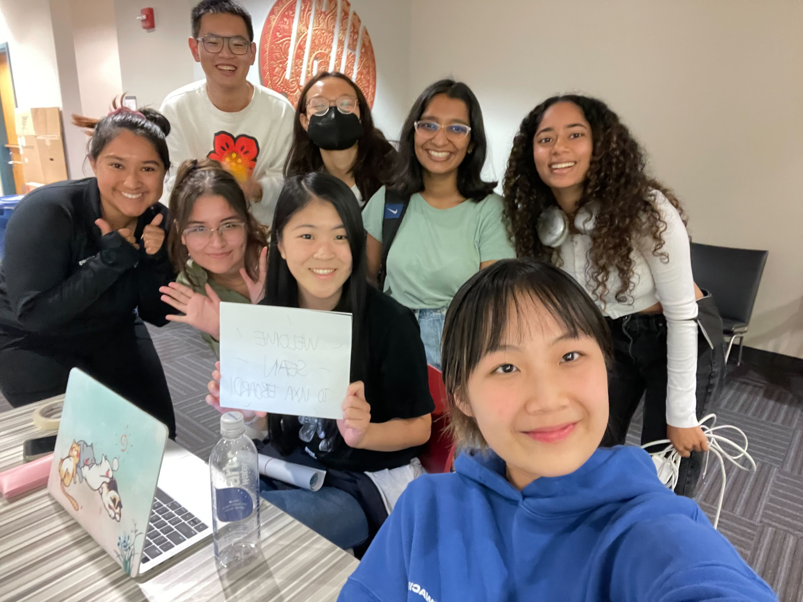
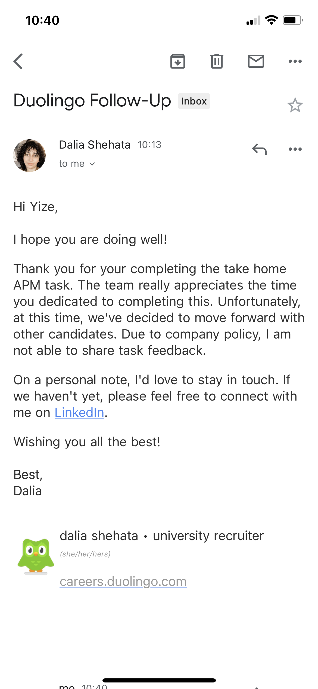

Ongoing Journey - September 2022
Birthday, 22, feeling special
 Cake for 22
Cake for 22
I was never big on birthdays, not that I don’t like celebrating, this sense of reluctance, being the center of attention? Parties presents and cakes, these tends to excite me much less compared to others.
That is to say, still felt nice getting surprises though. Remember waking up in the afternoon seen Anita & Elisa’s text with the bolded ‘HAPPY BIRTHDAY SEAN’, this warm and fuzzy feeling that I am on their mind, felt quite special.
And yes talking about special I did get myself a small slice of cheesecake, Xiaohan insisted it was a pie :’).
Getting COVID
Since I wasn't able to join in person, UXA hosted a virtual welcomeStarted off with a pretty bad sore throat the second week in the afternoon, turned into a fever later into the night. Tested in the morning and yup, I was indeed positive lol.
First time having COVID so took around two and half weeks to recover, luckily I’ve gotten the booster shots so it really just felt like a mild fever.
Similar reflection towards birthday, appreciated the amount of care more than anything else. Professors handed me unlimited late days for the assignments I missed, Nicole brought groceries directly to my door, and Helen after sending ‘bitch don’t die’ rush over and dropped off enough Tylenol to take for the rest of my life (thank you all so much lol).
Thinking now, felt fortunate that no one I knew got COVID in the meantime, felt a sense of guilt/unease imagining people around me getting it because of me…
One day I will, life as a map
One of the many rejections that I've gotLife is so much more about avoiding the wrong choices than making the right ones
Wrote to myself that life is an infinite game this August and realized I wasn’t following it at all lol. Now in the environment of school, I’ve again dwelling on a past that I can’t alter, worrying about a future I can’t predict.
Sure I told myself ‘live under the present’ just like this May however, felt less helped as I am way too similar to the people I surround myself with rn, wanting the same thing and constantly comparing.
桌沿 mentioned life being a map instead of a track, that there is no such thing as the ‘right choice’, as we are all running towards different directions
你我并未站在同一跑道上赛跑，我们遥遥相望，彼此鼓励和祝福，然后继续奔跑在广袤的地图之中、自己的人生道路之上。
In the future think life as an infinite game, and in the present understand that we are running towards different goals, felt that’s the missing puzzle piece that I need.
Talking about myself
 Felt nice being tall thanks mom
Felt nice being tall thanks mom
不在于你写得是不是“我”，而在于你写的是不是“人”。
Attended a concert at Boston during the weekend with some friends. While chatting with Angela she said
Talking to you doesn’t feel like, talking to you?
As funny as I felt, Anita mentioned the same thing once, I listen, rephrase and then quote other’s experiences in a conversation, avoiding touching myself in the process; the same pattern appears looking back at my blog, I often skip ‘I’s in a sentence, making the writing appear third person.
I felt, afraid?, talking about my point of view. When in conversations often bring forth the point instead of myself, and in writing I always try to stay objective.
Hence the reflection, knowing the people that I get to meet in the past few years, I want to be, more emotional almost? Saying more terms like ‘I think’ and ‘I feel’, doing things because I like them now, instead of thinking a year in the future.
It doesn’t matter whether it’s first or third person, people care more about how much they can resonate with the experience you share, if they think you are human you know.
What Xiaohan said.